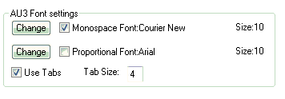

The font used by the editor can be set by using SciTEConfig:

Colours
The special lexer used SciTE4Autoit3 puts the various elements of AutoIt code into different colours depending on their syntax. These colours can be set via SciTEConfig - either individually or as an complete
scheme: